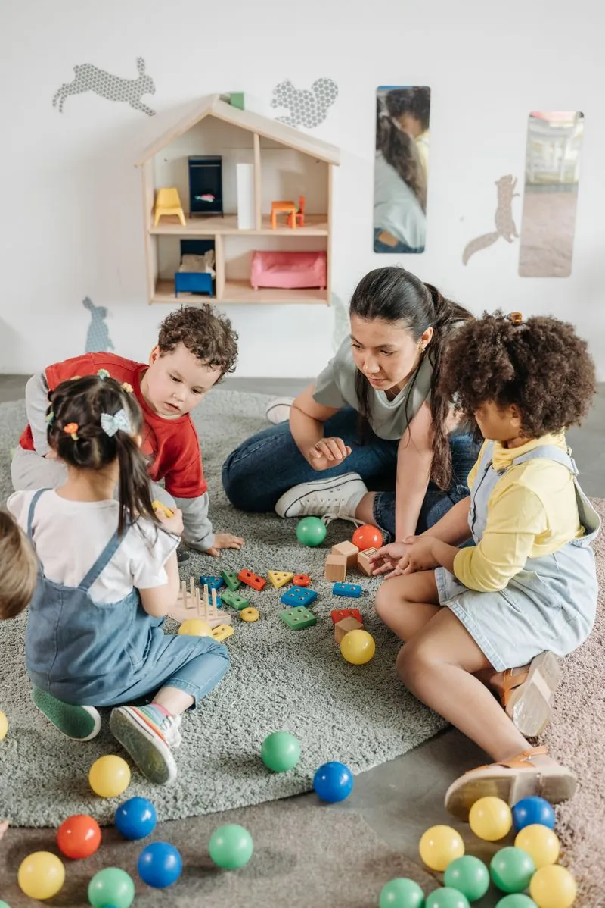
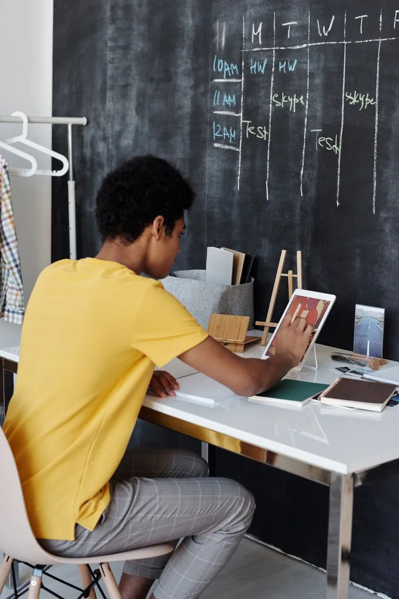

Masa Keemasan
Sang Bintang Dimulai di Sini
Si kecil belajar lewat bermain sejak usia dini.
Kelas Sesuai Usia Si Kecil
Kegiatan disesuaikan dengan usia si kecil.

Kelompok Bermain (KB)
KB-K untuk anak usia 2–3 tahun dan KB-B untuk anak usia 3–4 tahun. Si kecil melatih gerak tubuh, mengenal lingkungan sekitar, dan belajar bermain bersama teman.
- Berbagi dan menunggu giliran.
- Mulai mandiri dan mengenal sopan santun.
- Menggunakan Bahasa Mandarin dalam kegiatan di kelas.

Taman Kanak-Kanak (TK)
TK A untuk anak usia 4–5 tahun dan TK B untuk anak usia 5–6 tahun. Si kecil mulai mengenal huruf dan angka sebagai persiapan masuk SD.
- Persiapan membaca dan menulis dalam tiga bahasa.
- Bermain dan bekerja sama dalam kelompok.
- Eksplorasi logika lewat masalah sederhana.
Cara Belajar di KB dan TK
Si kecil belajar lewat bermain yang terarah.
Budi Pekerti
Si kecil dibiasakan menerapkan 10 Nilai Moral dan nilai Di Zi Gui dalam kegiatan sehari-hari.
Lihat Budi PekertiTrilingual
Si kecil dilatih menggunakan Bahasa Mandarin, Inggris, dan Indonesia bersama guru native. Di KB dan TK, porsi Bahasa Mandarin 70%.
Lihat TrilingualMetode Learning Corner
Metode mengajar dari Prof. Lin Pei Rong. Kelas KB dan TK punya beberapa mini corner, tempat si kecil eksplor kegiatan yang ia minati.
Lihat STEAMKegiatan Sehari-hari
Contoh kegiatan si kecil di sekolah.


Geser untuk melihat kegiatan lain
Fasilitas KB dan TK
Ruang belajar yang aman dan nyaman.

Ruang Kelas
Memakai sirkulasi udara alami, tanpa pendingin ruangan.

Mini Corner
Beberapa sudut kegiatan di dalam kelas.
Playground
Tempat si kecil bermain dan bergerak.
Keamanan dan Kesehatan Si Kecil
Si kecil dijaga selama berada di sekolah.
-
Unit Kesehatan Sekolah
Bekerja sama dengan perawat dari Rumah Sakit Santo Borromeus.
-
Penjemputan
Identitas penjemput dicek sebelum si kecil pulang.
-
Pendampingan di Kelas
Setiap kelas didampingi satu guru native dan dua guru pendamping.

Biaya KB dan TK
Uang Pangkal KB sudah mencakup masa belajar si kecil sampai lulus TK. Untuk rincian biaya, silakan hubungi tim admisi kami.
Program Keluarga (Siblings)
Keringanan Biaya Pendidikan bagi keluarga dengan lebih dari satu anak.